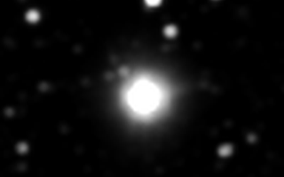
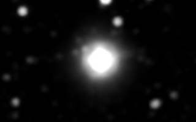
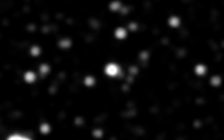
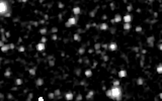
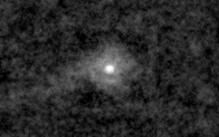

How Sky Blink works
Sky Blink turns NASA's SPHEREx images into a time machine for the sky. Everything you see on the site comes from real SPHEREx images; this page shows how they get there, and what is measured versus what is only there to help your eyes.
-
1SPHEREx photographs the whole sky, again and again
SPHEREx is a NASA space telescope launched in March 2025. It maps the entire sky in 102 infrared colours and repeats the whole map about every six months.
So every patch of sky has been photographed several times, months apart. Those repeat visits are what make a time machine possible.

One patch of sky, first sweep 
The same patch a year later -
2Stack, line up, compare
For each sweep, Sky Blink stacks the 30 to 40 exposures taken between 1 and 2 micrometres into one clean, complete image, and puts every sweep on exactly the same grid.
Then it finds every star, matches them between sweeps, and keeps only changes far larger than the measurement noise: stars that moved in a straight line, and stars whose brightness changed. Above, Barnard's Star moved 9.1 arcseconds north in a year.

A variable star, Sep 2025 Sep 2026: measured 1.84 times fainter -
3Check, then explain
A brightness change is measured again in the single exposures, comparing the star only at matching colours and against nearby ordinary stars. Fuzzy blobs, glare near bright stars, nebulae and reflections inside the instrument are rejected or labelled as candidates.
Finally an AI turns the measurements into plain words. It sees only the numbers, and every number it writes is checked against them; if anything does not match, the site uses sentences built straight from the measurements instead.
“Barnard's Star moved 9.1 arcsec to the north, a shift equal to 1/205 of the width of the full moon.” Written by AI from the measurements; numbers checked. -
4Follow things that move fast
Comets and asteroids cross the sky in hours. Sky Blink asks NASA JPL's orbit service where the object was at the moment of every SPHEREx exposure, cuts out a picture centred on it, and plays them in order. The stars stream past while the object stays put.

One image, centred on the comet 
Stacked: the stars smear away -
5Brightness at every wavelength
SPHEREx has six detectors covering 0.75 to 5 micrometres. Each exposure sees a spot through a slightly different colour, so measuring the spot in every exposure gives its brightness at many wavelengths: a rough spectrum.
The charts show one dot per real exposure, with its measurement error. Exposures where a saturated or flagged pixel falls inside the measuring circle are left out, never filled in. These are quick-look values, not calibrated science measurements.
Barnard's Star: 117 of 358 exposures measured. The other 241 were left out because the star overloads the detector at its centre. From the showcase build log (tools/build_spectra.py). -
6Citizen science: Flag findings & review queue
Anyone can inspect the time machine, click anywhere to drop a pin, and flag an unexplained anomaly: Moving, Brightness change, Artifact, or Not sure. Celestial RA/Dec coordinates and observation timestamps are computed automatically.
Unconfirmed candidates enter an interactive “Is this real?” review queue with before/after comparisons. Your flagged findings can be exported anytime as a CSV or JSON report ready to share with astronomers.
“Finding flagged at RA 269.452°, Dec +4.738° [Moving] — Matches confirmed detection.” Exportable as a research report ready to share.
What is real, and what only helps your eyes
- Real
- Every picture is made from SPHEREx exposures in the NASA/IPAC Infrared Science Archive. Every number (motion, brightness change, significance) is measured from them.
- Real steps vs Blend
- Toggle between jumping strictly across actual astronomical exposures (Real steps) or fading between sweeps (Blend). When blending, frames are explicitly labelled “not observed”.
- Spectra
- One dot per real exposure, measured with quick-look photometry. Not calibrated science values. Exposures with bad pixels in the measuring circle are left out.
- Magnified
- Zooming in enlarges real pixels; nothing is added.
- Candidate
- A change the checks could not confirm. It is placed into the community review queue, never assumed as a discovery.
- Citizen findings
- Saved locally and exportable as a structured report ready to share, not as automated submission to the Minor Planet Center.
- From orbits
- Where a comet or asteroid should be comes from NASA JPL Horizons. The picture around it is a real SPHEREx exposure.